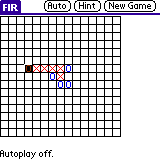
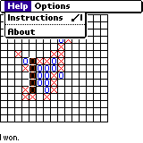
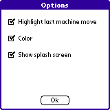
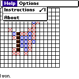
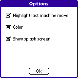

FIR - Five In a Row for PalmOS(R)

 



What
Fir is a "tic-tac-toe"-like two-player game, where each player
has a designated symbol. The objective is to get five symbols in a
line, either horizontally, vertically, or diagonally. The players take
turns placing their symbol in an unused square. The player who
achieves the objective first has won.
How to play
Symbols: You are X, the computer is O.
Placing symbols: Tap on an empty square.
Hint: You can get a hint to where to place your symbol by tapping the
"Hint" button.
Auto Play: You can watch the computer play against itself by tapping the
"Auto" button. To turn auto play off, tap button or board again.
Start new game: start a new game by tapping the "New Game" button.
For which platform
Platforms running PalmOS(R) ROM versions 3.0 and higher. Color is
supported for devices that have color.
Under what conditions
The game is free software distributed under the
GNU General Public
Licence version 2.
Important: FIR comes with ABSOLUTELY NO WARRANTY; for details read the
licence.
FIR is free software, and you are welcome to redistribute it
under certain conditions; read the licence for details.
Where
You can get the game
here. The game
is distributed as a gzipped tar (tgz) archive containing the source
and a compiled binary for the game. For a windows program to open this
archive with, see
www.winzip.com.
Misc.
Version: the current game version is 1.0 build 90
Bugs: Please report bugs to
staal ta dsg dot harvard dot edu
If you find the game useful or use parts of it, please let me know.
Have fun!
staal's email
Last modified: Tue Sep 4 18:46:16 2001